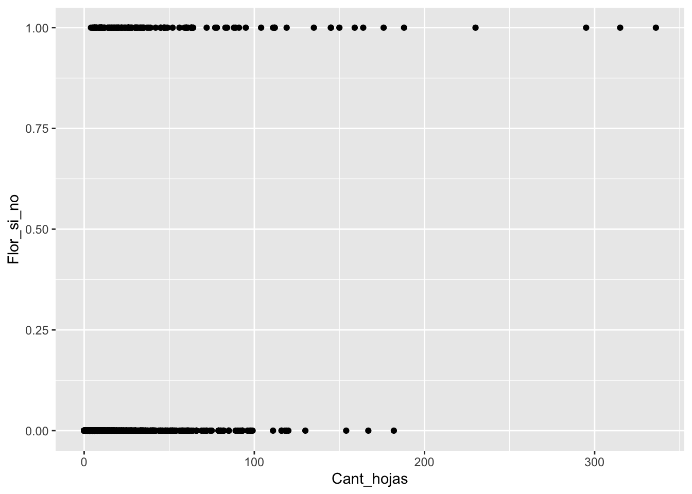
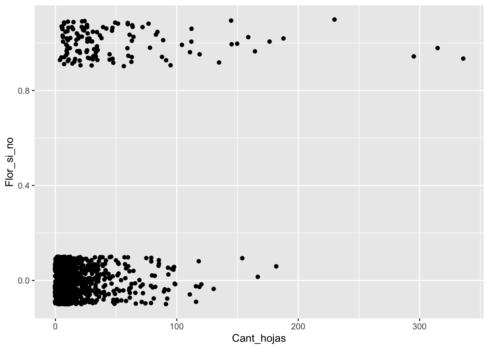
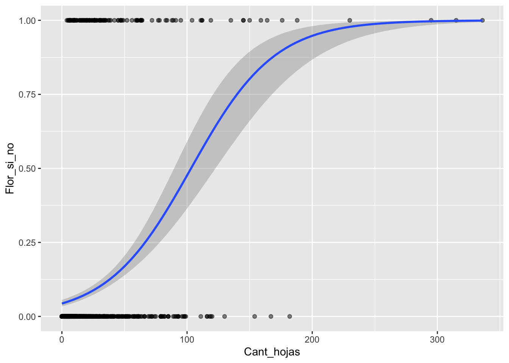
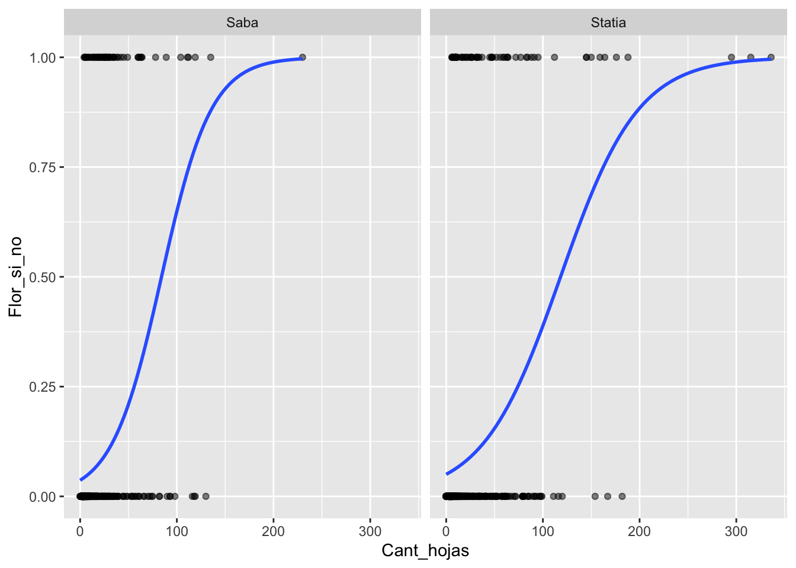
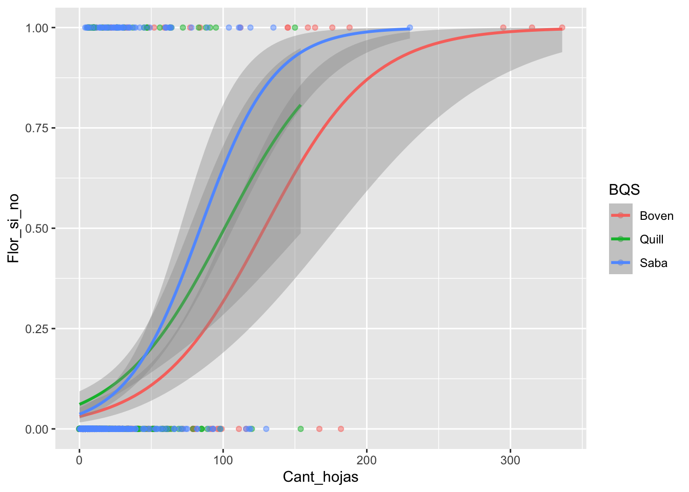
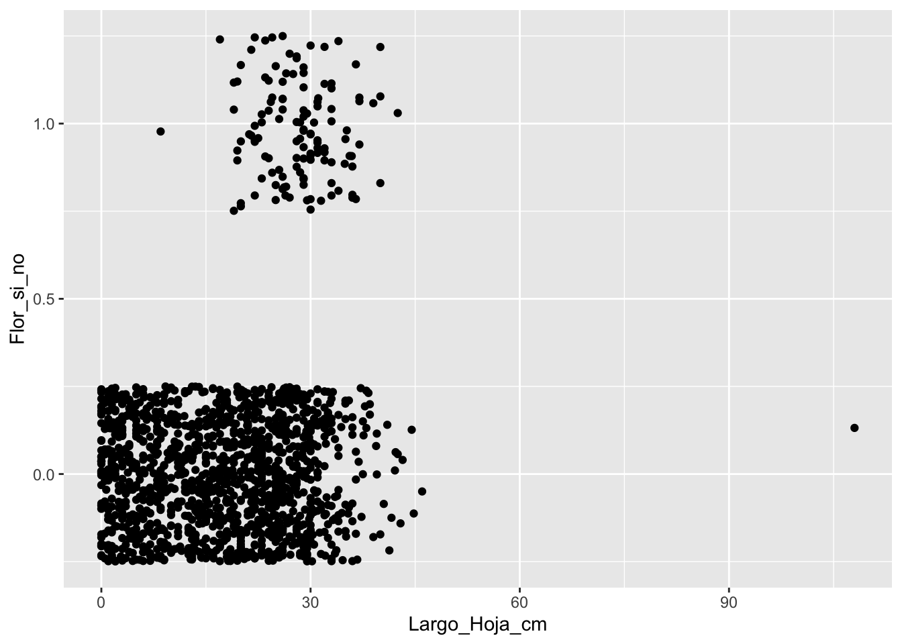
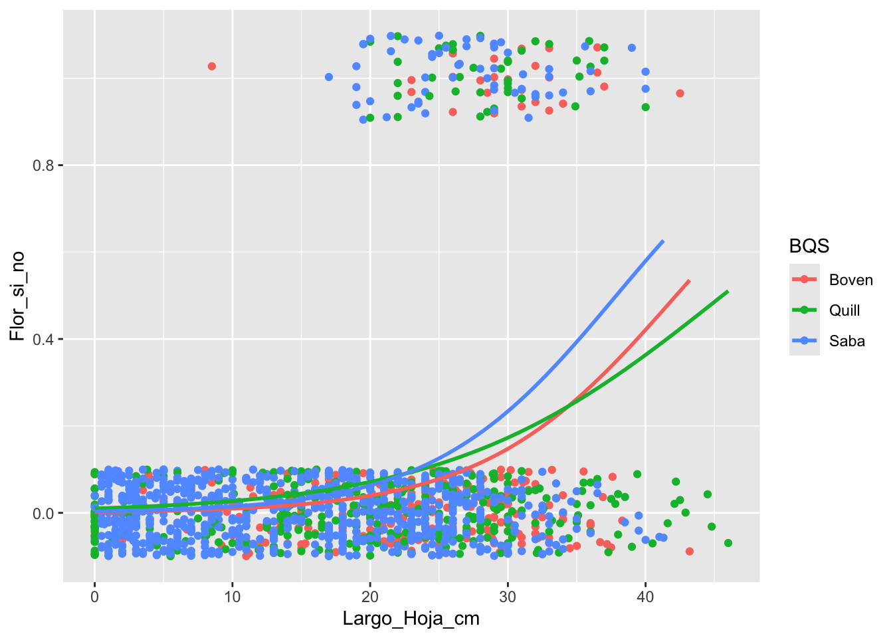

Capítulo 19 Regresión Logística
Fecha de la última revisión
## [1] "2026-08-13"

Esta regresión es utilizada cuando la variable dependiente tiene solamente dos alternativas (representadas de forma numérica, 0 y 1) y la variable independiente es una variable continua.
Regresión logística. Modelo lineal generalizado (GLM) que modela la probabilidad de un resultado binario (0/1) en función de una o más variables predictoras. En vez de predecir Y directamente, predice el logit (el logaritmo de las probabilidades relativas, \(\log\frac{p}{1-p}\)), lo que garantiza que la probabilidad estimada quede siempre entre 0 y 1.
19.1 Brassavola cucullata
Los datos fueron recolectados en dos pequeñas islas del Caribe, San Eustaquio y Saba.
Brassavola cucullata pertenece a la subtribu Laeliinae y es una especie epífita y rupícola que puede formar grandes racimos de brotes. Cada brote está compuesto por un solo tallo de 3.5-12.5 cm de largo y 1-3.5 mm de diámetro y tiene una sola hoja semi-tereta de 16-35 cm de largo y solo un poco más gruesa que el tallo. Las inflorescencias terminales miden 3-30 mm de largo y suelen tener una sola flor. Las flores son en gran parte blancas con las partes delgadas del perianto que a menudo se vuelven de color amarillo pálido hacia sus ápices. El labelo es ovado-acuminado y fimbriado alrededor de la columna. El cunículo se extiende hacia el ovario inferior y no tiene néctar. Las flores engañosas tienen una fragancia nocturna dulce y espesa, que puede perdurar hasta el día. La producción de frutos depende de los polinizadores. Las cápsulas tardan varios meses en desarrollarse y son pediceladas y picudas (restos de la columna); el cuerpo de la cápsula mide entre 2 y 5 cm de largo y produce muchos miles de semillas polvorientas (Ackerman y Collaborators 2014).
En cada una de las tres poblaciones, etiquetamos todas las plantas de B. cucullata que pudimos encontrar. Observamos si cada planta era epífita o epilítica, medimos la altura sobre el suelo, buscamos evidencia de herbivoría foliar, medimos la longitud de la hoja más larga y contamos el número de brotes de hojas, flores y frutos. Si las flores estaban presentes, registramos si habían sido visitadas con éxito o no mediante una inspección visual para la eliminación de polinarios o polinias en el estigma. Estos datos se obtuvieron una vez al año durante la época de floración. Nuestras observaciones en la población de Quill abarcaron 2009-2013, en Boven 2010-2013 y en Saba 2011-2014.


Figure 19.1: La especie Brassavola cucullata en la isla de San Eustaquio
Puedes encontrar el manuscrito en este enlace, que evalúa la biología de la orquídea, la posibilidad de extinción y cómo las cabras impactan su supervivencia.
https://www.journals.uchicago.edu/doi/pdf/10.1086/709399
library(readr)
Student_Brassavola <- read_csv("Data_files_csv/Student_Brassavola.csv")
completeBrass=na.omit(Student_Brassavola) # remove NA
head(completeBrass)| Island | Year | Pl_Num | Leaf_Num | LLL | Bud_Num | Fl_Num | Fr_Num | BQS | Flowers_Y_N |
|---|---|---|---|---|---|---|---|---|---|
| Saba | 2.01e+03 | A1701 | 20 | 26 | 0 | 1 | 0 | Saba | 1 |
| Saba | 2.01e+03 | A1702 | 6 | 18 | 0 | 0 | 0 | Saba | 0 |
| Saba | 2.01e+03 | A1703 | 5 | 13 | 0 | 0 | 0 | Saba | 0 |
| Statia | 2.01e+03 | 102 | 33 | 31 | 0 | 0 | 0 | Boven | 0 |
| Statia | 2.01e+03 | 102 | 40 | 34 | 0 | 0 | 0 | Boven | 0 |
| Statia | 2.01e+03 | 102 | 10 | 23 | 0 | 1 | 0 | Boven | 1 |
#library(tidyverse)
#library(dplyr)
unique(completeBrass$Fr_Num)## [1] 0 2 1 3
# completeBrass$Fr_Y_N2=ifelse(completeBrass$Fr_Num>0 ,1,0) Metodo de la función base
completeBrass$Fr_Y_N1=ifelse(completeBrass$Fr_Num>0 ,1,0) # Método de dplyr
unique(completeBrass$Fr_Y_N1) # deberia tener solamente dos alternativas, "0" y "1", Frutos no y si## [1] 0 1Evaluar las tendencias centrales y la dispersión de las variables, y cambiar el nombre de las variables al español.
Brass=completeBrass%>%
dplyr::rename(Isla=Island, Ano=Year, Numero_planta=Pl_Num,
Cant_hojas=Leaf_Num, Largo_Hoja_cm=LLL,
Cant_capullo=Bud_Num, Cant_Flores=Fl_Num,
Cant_Frutos=Fr_Num, BQS=BQS, Flor_si_no=Flowers_Y_N,
Frutos_si_no=Fr_Y_N1)
summary(Brass)## Isla Ano Numero_planta Cant_hojas
## Length :1436 Min. :2009 Length :1436 Min. : 0.00
## N.unique : 2 1st Qu.:2011 N.unique : 678 1st Qu.: 3.00
## N.blank : 0 Median :2011 N.blank : 0 Median : 7.00
## Min.nchar: 4 Mean :2011 Min.nchar: 3 Mean : 16.66
## Max.nchar: 6 3rd Qu.:2012 Max.nchar: 6 3rd Qu.: 17.00
## Max. :2014 Max. :336.00
## Largo_Hoja_cm Cant_capullo Cant_Flores Cant_Frutos
## Min. : 0.00 Min. :0.00000 Min. :0.0000 Min. :0.00000
## 1st Qu.: 8.50 1st Qu.:0.00000 1st Qu.:0.0000 1st Qu.:0.00000
## Median : 19.00 Median :0.00000 Median :0.0000 Median :0.00000
## Mean : 18.12 Mean :0.05153 Mean :0.1247 Mean :0.04735
## 3rd Qu.: 26.00 3rd Qu.:0.00000 3rd Qu.:0.0000 3rd Qu.:0.00000
## Max. :108.00 Max. :4.00000 Max. :7.0000 Max. :3.00000
## BQS Flor_si_no Frutos_si_no
## Length :1436 Min. :0.00000 Min. :0.00000
## N.unique : 3 1st Qu.:0.00000 1st Qu.:0.00000
## N.blank : 0 Median :0.00000 Median :0.00000
## Min.nchar: 4 Mean :0.08705 Mean :0.03552
## Max.nchar: 5 3rd Qu.:0.00000 3rd Qu.:0.00000
## Max. :1.00000 Max. :1.0000019.3 Modelo Lineal Generalizado
En este módulo se hace una primera introducción a otro tipo de herramienta para el análisis de datos, denominada Modelo Lineal Generalizado (GLM). Lo interesante de este acercamiento es que, aunque uno tenga una variable de respuesta que no cumple con la distribución normal, hay múltiples opciones para los análisis. En este módulo solamente se estará presentando el tipo de datos donde la variable de respuesta (Y) es binomial.
Hay tres componentes en cualquier GLM:
Componente aleatorio: se refiere a la distribución de probabilidad de la variable de respuesta (Y); por ejemplo, la distribución binomial (0, 1: Sí o No; Vivo o Muerto). Nota que la variable Y puede tener muchos otros tipos de distribución, incluyendo la normal, la lognormal, la de proporciones y muchas otras.
Variables predictoras: especifica las variables explicativas \(X_1,\ X_2,\ X_3,...X_k\) en el modelo. La combinación lineal se puede expresar de la siguiente forma; por ejemplo, \(\beta_0+\beta_1\cdot x_1+\beta_2\cdot x_2+\ ...+\beta_k\cdot x_k\), como hemos visto en una regresión lineal.
Función de enlace: η o g (μ): especifica el enlace entre componentes aleatorios y sistemáticos. Dice cómo el valor esperado de la respuesta se relaciona con las variables de la ecuación lineal explicativa.
19.4 Los supuestos de la regresión logística
- La variable de respuesta es binaria (dicotómica): sí o no, presente o ausente, 1 o 0.
- Existe una relación lineal entre el logit(p) de la variable de respuesta y las variables predictoras.
- No hay valores extremos o atípicos en los predictores continuos.
- No hay correlaciones altas (es decir, multicolinealidad) entre las variables predictoras (vea el módulo de Correlación).
19.5 Comparación de los modelos lineal y logístico
El primer paso es entender cuál es la diferencia entre una regresión lineal y una regresión logística. Podemos visualizar ambas fórmulas y ver cómo difieren.
La regresión lineal:
\[Y_i=\beta_0+\beta_1X_{1i}+\beta_2X_{2i}\]
19.6 Regresión logística:
\(p=P(Y=1)\), o sea la probabilidad de que Y tenga el valor de 1; y \(1-p = 1-P(Y=1)\), que sería la probabilidad del valor 0 en tu conjunto de datos.
\[\log\frac{p}{1-p}=\beta_0+\beta_1X_{1i}+\beta_2X_{2i}\]
Nota que la primera ecuación es un modelo que trata de predecir el valor de Y, mientras que en la segunda se estima la probabilidad de que la variable de respuesta tenga un valor de 1 o 0. Las probabilidades van a variar de 0 a 1, o sea de 0% a 100%. El término correcto es que las respuestas son binarias, lo que corresponde a la distribución de Bernoulli.
Van a ver en la literatura que la fórmula se representa también de la siguiente forma, donde se escribe como \(logit(p)\).
\[logit\left(p\right)=\log\frac{p}{1-p}=\beta_0+\beta_1X_{1i}+\beta_2X_{2i}\]
\(p\) = probabilidad de que \(Y=1\); \(\frac{p}{1-p}\) = odds (probabilidades relativas); \(\log\frac{p}{1-p}\) = logit, la escala en la que el modelo es lineal; \(\beta_0\) = intercepto; \(\beta_k\) = efecto de cada predictor sobre el logit. Para recuperar la probabilidad se usa la función inversa: \(P(Y)=\frac{1}{1+e^{-(\beta_0+\beta_1 x)}}\).
En el siguiente enlace se puede encontrar más información: https://en.wikipedia.org/wiki/Logistic_regression
Se evalúan tres modelos: 1. la probabilidad de tener flores está relacionada con la cantidad de hojas (el tamaño de la planta). 2. la probabilidad de tener flores está relacionada con el largo de la hoja más larga de la planta (el tamaño de la planta). 3. la probabilidad de tener flores está relacionada con el largo de la hoja más larga y con la cantidad de hojas.
19.6.1 Modelo Lineal Generalizado (glm)
La curva logística fue descrita por el matemático belga Pierre François Verhulst (~1838) para modelar el crecimiento poblacional. El término logit y su uso para modelar probabilidades se deben a Joseph Berkson (1944), y David Cox popularizó la regresión logística en 1958. En 1972, John Nelder y Robert Wedderburn unificaron esta y otras técnicas bajo el marco de los Modelos Lineales Generalizados (GLM).
glm(y ~ x, data, family = binomial()) — modelo lineal generalizado.
-
Qué hace: ajusta un modelo cuando la respuesta no es normal; con
family = binomial()realiza una regresión logística para unaybinaria (0/1). -
Diferencia con
lm(): modela el logit de la probabilidad, no la respuesta directamente. -
Cómo leer la salida: los coeficientes están en escala logit; un coeficiente positivo aumenta la probabilidad de “1” al crecer
x. Revisa el valor-p de cada uno.
names(completeBrass)## [1] "Island" "Year" "Pl_Num" "Leaf_Num" "LLL"
## [6] "Bud_Num" "Fl_Num" "Fr_Num" "BQS" "Flowers_Y_N"
## [11] "Fr_Y_N1"
BrassModel.1 <- glm(Flor_si_no ~ Cant_hojas,
data = Brass, family = binomial())
summary(BrassModel.1)##
## Call:
## glm(formula = Flor_si_no ~ Cant_hojas, family = binomial(), data = Brass)
##
## Coefficients:
## Estimate Std. Error z value Pr(>|z|)
## (Intercept) -3.088221 0.134013 -23.04 <2e-16 ***
## Cant_hojas 0.029925 0.002987 10.02 <2e-16 ***
## ---
## Signif. codes: 0 '***' 0.001 '**' 0.01 '*' 0.05 '.' 0.1 ' ' 1
##
## (Dispersion parameter for binomial family taken to be 1)
##
## Null deviance: 849.11 on 1435 degrees of freedom
## Residual deviance: 722.57 on 1434 degrees of freedom
## AIC: 726.57
##
## Number of Fisher Scoring iterations: 5
BrassModel.2 <- glm(Flor_si_no ~ Largo_Hoja_cm,
data = Brass, family = binomial())
summary(BrassModel.2)##
## Call:
## glm(formula = Flor_si_no ~ Largo_Hoja_cm, family = binomial(),
## data = Brass)
##
## Coefficients:
## Estimate Std. Error z value Pr(>|z|)
## (Intercept) -4.96559 0.33283 -14.919 <2e-16 ***
## Largo_Hoja_cm 0.11451 0.01199 9.553 <2e-16 ***
## ---
## Signif. codes: 0 '***' 0.001 '**' 0.01 '*' 0.05 '.' 0.1 ' ' 1
##
## (Dispersion parameter for binomial family taken to be 1)
##
## Null deviance: 849.11 on 1435 degrees of freedom
## Residual deviance: 722.30 on 1434 degrees of freedom
## AIC: 726.3
##
## Number of Fisher Scoring iterations: 6
BrassModel.3 <- glm(Flor_si_no ~ Cant_hojas+Largo_Hoja_cm,
data = Brass, family = binomial())
summary(BrassModel.3)##
## Call:
## glm(formula = Flor_si_no ~ Cant_hojas + Largo_Hoja_cm, family = binomial(),
## data = Brass)
##
## Coefficients:
## Estimate Std. Error z value Pr(>|z|)
## (Intercept) -4.673981 0.330208 -14.155 < 2e-16 ***
## Cant_hojas 0.019103 0.003132 6.100 1.06e-09 ***
## Largo_Hoja_cm 0.080198 0.013034 6.153 7.60e-10 ***
## ---
## Signif. codes: 0 '***' 0.001 '**' 0.01 '*' 0.05 '.' 0.1 ' ' 1
##
## (Dispersion parameter for binomial family taken to be 1)
##
## Null deviance: 849.11 on 1435 degrees of freedom
## Residual deviance: 677.99 on 1433 degrees of freedom
## AIC: 683.99
##
## Number of Fisher Scoring iterations: 6
names(completeBrass)## [1] "Island" "Year" "Pl_Num" "Leaf_Num" "LLL"
## [6] "Bud_Num" "Fl_Num" "Fr_Num" "BQS" "Flowers_Y_N"
## [11] "Fr_Y_N1"##
## Call:
## glm(formula = Flowers_Y_N ~ Leaf_Num, family = binomial(), data = completeBrass)
##
## Coefficients:
## Estimate Std. Error z value Pr(>|z|)
## (Intercept) -3.088221 0.134013 -23.04 <2e-16 ***
## Leaf_Num 0.029925 0.002987 10.02 <2e-16 ***
## ---
## Signif. codes: 0 '***' 0.001 '**' 0.01 '*' 0.05 '.' 0.1 ' ' 1
##
## (Dispersion parameter for binomial family taken to be 1)
##
## Null deviance: 849.11 on 1435 degrees of freedom
## Residual deviance: 722.57 on 1434 degrees of freedom
## AIC: 726.57
##
## Number of Fisher Scoring iterations: 5Hagamos una figura del modelo anterior.
stat_smooth(method = "glm", method.args = list(family = binomial)) — curva logística en ggplot2.
- Qué hace: superpone la curva ajustada de la regresión logística sobre el diagrama de puntos.
-
Argumento clave:
method.args = list(family = binomial)le indica que use un GLM binomial (en lugar de una recta). -
Opción:
se = TRUEmuestra la banda del intervalo de confianza;se = FALSEla oculta.
library(ggplot2)
ggplot(completeBrass, aes(Leaf_Num, Flowers_Y_N))+
geom_point()+
stat_smooth(method="glm", se=TRUE, method.args = list(family=binomial))19.6.2 Removiendo el intercepto
Si no te interesa el intercepto, se añade un “-1” después de las variables predictoras en la fórmula.
Los valores de interés en nuestro caso son el intercepto y la pendiente (el valor que se encuentra debajo del intercepto).
names(Brass)## [1] "Isla" "Ano" "Numero_planta" "Cant_hojas"
## [5] "Largo_Hoja_cm" "Cant_capullo" "Cant_Flores" "Cant_Frutos"
## [9] "BQS" "Flor_si_no" "Frutos_si_no"
BrassModel.1.1 <- glm(Flor_si_no ~ Cant_hojas+BQS+Largo_Hoja_cm-1,
data = Brass, family = binomial())
summary(BrassModel.1.1)##
## Call:
## glm(formula = Flor_si_no ~ Cant_hojas + BQS + Largo_Hoja_cm -
## 1, family = binomial(), data = Brass)
##
## Coefficients:
## Estimate Std. Error z value Pr(>|z|)
## Cant_hojas 0.020693 0.003221 6.425 1.31e-10 ***
## BQSBoven -5.425491 0.428570 -12.660 < 2e-16 ***
## BQSQuill -4.704079 0.392591 -11.982 < 2e-16 ***
## BQSSaba -4.586157 0.328376 -13.966 < 2e-16 ***
## Largo_Hoja_cm 0.083145 0.013310 6.247 4.19e-10 ***
## ---
## Signif. codes: 0 '***' 0.001 '**' 0.01 '*' 0.05 '.' 0.1 ' ' 1
##
## (Dispersion parameter for binomial family taken to be 1)
##
## Null deviance: 1990.72 on 1436 degrees of freedom
## Residual deviance: 668.85 on 1431 degrees of freedom
## AIC: 678.85
##
## Number of Fisher Scoring iterations: 619.6.3 Estimado las probabilidades
Predecir la probabilidad (de tener flores) usando la ecuación, con los resultados del modelo anterior:
\[P(Y)\quad =\quad \frac { 1 }{ 1+{ e }^{ -(b+m*{ x }_{ i }) } }\] \[P(Y)\quad =\quad \frac { 1 }{ 1+{ e }^{ -((intercepto)+pendiente\cdot variable.predictora) } }\]
Se usa esta ecuación para predecir la probabilidad de ‘Y’ para un valor específico de la variable ‘X’ de interés.
summary(model1)##
## Call:
## glm(formula = Flowers_Y_N ~ Leaf_Num, family = binomial(), data = completeBrass)
##
## Coefficients:
## Estimate Std. Error z value Pr(>|z|)
## (Intercept) -3.088221 0.134013 -23.04 <2e-16 ***
## Leaf_Num 0.029925 0.002987 10.02 <2e-16 ***
## ---
## Signif. codes: 0 '***' 0.001 '**' 0.01 '*' 0.05 '.' 0.1 ' ' 1
##
## (Dispersion parameter for binomial family taken to be 1)
##
## Null deviance: 849.11 on 1435 degrees of freedom
## Residual deviance: 722.57 on 1434 degrees of freedom
## AIC: 726.57
##
## Number of Fisher Scoring iterations: 5
exp(1) #= e## [1] 2.718282
e=exp(1)
e## [1] 2.718282
P_10=1/(1+2.7182818284^-(-3.088 +0.0299*150))
P_10## [1] 0.8017074
1/(1+exp(1)^-(-3.065 +0.0299*150))## [1] 0.8053384
P_25=1/(1+exp(-(-3.065 +0.0297*25)))
P_25## [1] 0.08927658
P_50=1/(1+e^-(-3.065 +0.0297*50))
P_50## [1] 0.1707955
P_70=1/(1+e^-(-3.065 +0.0297*70))
P_70## [1] 0.2717029
P_150=1/(1+e^-(-3.065 +0.0297*150))
P_150## [1] 0.800592219.7 Visualizando una regresión logistica
names(Brass)## [1] "Isla" "Ano" "Numero_planta" "Cant_hojas"
## [5] "Largo_Hoja_cm" "Cant_capullo" "Cant_Flores" "Cant_Frutos"
## [9] "BQS" "Flor_si_no" "Frutos_si_no"
library(ggplot2)
ggplot(Brass, aes(Cant_hojas,Flor_si_no))+
geom_point()
19.8 Reducir solapamiento de los puntos
Usar geom_jitter
ggplot(el archivo de datos, aes(las variables continuas))
• geom_jitter(alpha, color, fill, shape, size)
◦ alpha: la intensidad del color
◦ color: el color de la línea alrededor de las barras
◦ fill: el color de las barras
◦ linetype: representa el estilo de línea; ver sección “Especificación Estética”
◦ size: representa el grosor de la línea
◦ weight: para modificar el valor original; entonces no sería, por ejemplo, el conteo/suma de los valores si no un valor ponderado (promedio ponderado)
ggplot(Brass, aes(Cant_hojas,Flor_si_no))+
geom_jitter(height = 0.10)
19.9 Gráfico con ajuste binomial
names(Brass)## [1] "Isla" "Ano" "Numero_planta" "Cant_hojas"
## [5] "Largo_Hoja_cm" "Cant_capullo" "Cant_Flores" "Cant_Frutos"
## [9] "BQS" "Flor_si_no" "Frutos_si_no"
ggplot(Brass, aes(Cant_hojas,Flor_si_no))+
geom_point(alpha=.5) +
stat_smooth(method="glm", se=TRUE, method.args = list(family=binomial))
19.9.1 El modelo de regresión binomial
summary(BrassModel.1)##
## Call:
## glm(formula = Flor_si_no ~ Cant_hojas, family = binomial(), data = Brass)
##
## Coefficients:
## Estimate Std. Error z value Pr(>|z|)
## (Intercept) -3.088221 0.134013 -23.04 <2e-16 ***
## Cant_hojas 0.029925 0.002987 10.02 <2e-16 ***
## ---
## Signif. codes: 0 '***' 0.001 '**' 0.01 '*' 0.05 '.' 0.1 ' ' 1
##
## (Dispersion parameter for binomial family taken to be 1)
##
## Null deviance: 849.11 on 1435 degrees of freedom
## Residual deviance: 722.57 on 1434 degrees of freedom
## AIC: 726.57
##
## Number of Fisher Scoring iterations: 519.9.2 Visualizando diferentes grupos
En este gráfico se observa que la probabilidad de tener flores aumenta a medida que el número de hojas se aproxima a 100 (es decir, al acercarnos a ese valor, la probabilidad estimada de nuestra variable de respuesta es mayor).
names(Brass)## [1] "Isla" "Ano" "Numero_planta" "Cant_hojas"
## [5] "Largo_Hoja_cm" "Cant_capullo" "Cant_Flores" "Cant_Frutos"
## [9] "BQS" "Flor_si_no" "Frutos_si_no"
ggplot(Brass, aes(Cant_hojas,Flor_si_no))+
geom_point(alpha=.5) +
stat_smooth(method="glm", se=FALSE, method.args = list(family=binomial))+
facet_wrap(~Isla)
19.10 Solapamiento de los ajustes binomial por grupo
names(Brass)## [1] "Isla" "Ano" "Numero_planta" "Cant_hojas"
## [5] "Largo_Hoja_cm" "Cant_capullo" "Cant_Flores" "Cant_Frutos"
## [9] "BQS" "Flor_si_no" "Frutos_si_no"
ggplot(Brass, aes(Cant_hojas,Flor_si_no, colour=BQS))+
geom_point(alpha=.5) +
stat_smooth(method="glm", se=TRUE, method.args = list(family=binomial))
19.10.1 Evaluar usando el largo de la hoja más larga
names(Brass)## [1] "Isla" "Ano" "Numero_planta" "Cant_hojas"
## [5] "Largo_Hoja_cm" "Cant_capullo" "Cant_Flores" "Cant_Frutos"
## [9] "BQS" "Flor_si_no" "Frutos_si_no"
ggplot(Brass, aes(Largo_Hoja_cm,Flor_si_no))+
geom_jitter(height = 0.25)
19.10.2 Remover el valor sesgado
El valor se remueve ya que no es posible una hoja de más de un metro
19.10.2.1 Nota que se hace un subgrupo (subset) de los datos, usando la función subset(el data frame, la condición)
names(Brass)## [1] "Isla" "Ano" "Numero_planta" "Cant_hojas"
## [5] "Largo_Hoja_cm" "Cant_capullo" "Cant_Flores" "Cant_Frutos"
## [9] "BQS" "Flor_si_no" "Frutos_si_no"
ggplot(subset(Brass,Largo_Hoja_cm<90), aes(Largo_Hoja_cm,Flor_si_no, colour=BQS))+
geom_jitter(height = 0.10)+
stat_smooth(method="glm", se=FALSE, method.args = list(family=binomial))